Забота о природе необходима, потому что человек и природа тесно связаны. От состояния окружающей среды зависят наше здоровье и возможность жить на планете. Природа даёт нам чистый воздух (его производят растения), пресную воду, плодородные почвы для выращивания еды, а также сырьё и лекарственные вещества. Нарушение природного баланса ведёт к серьёзным последствиям: исчезновение видов (например, сокращение популяции пчёл снизит урожайность культур); вырубка лесов провоцирует эрозию почв и меняет климат; загрязнение водоёмов делает их непригодными для жизни. Из‑за деятельности человека происходит глобальное потепление — учащаются засухи, наводнения и ураганы, тает лёд, повышается уровень океана. Загрязнение воздуха, воды и почвы вредит здоровью: провоцирует болезни, отравления и хронические заболевания. Пребывание на природе, напротив, снижает стресс и помогает восстанавливаться. Мы несём ответственность перед будущими поколениями: бездумное использование ресурсов приведёт к дефициту чистой воды и воздуха, обеднению флоры и фауны. Кроме того, разрушение природы вызывает экономические потери — снижается урожайность, растут расходы на борьбу со стихийными бедствиями и здравоохранение. Таким образом, забота о природе — жизненно важная необходимость для устойчивого существования человечества и сохранения планеты для будущих поколений.
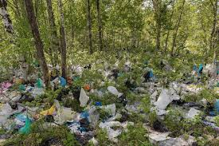
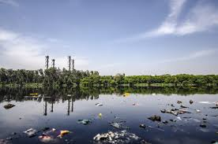
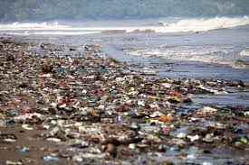
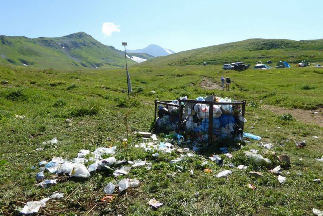
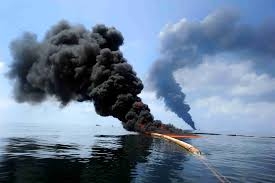
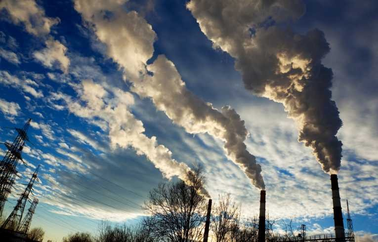
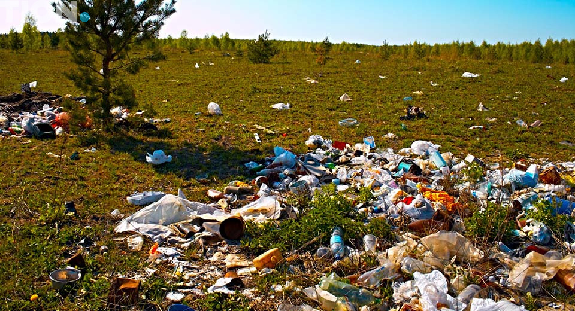
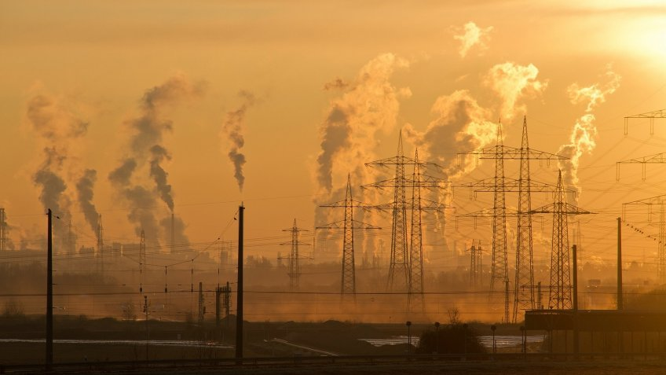
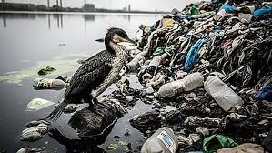
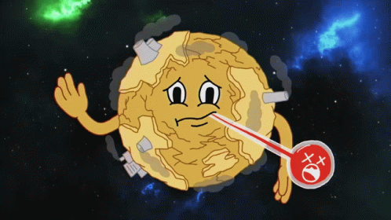
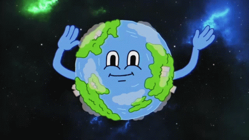
Чтобы спасти природу, нужно экономить воду и электроэнергию (выключать свет и воду, когда они не нужны, использовать энергоэффективные приборы), отказаться от одноразового пластика в пользу многоразовых альтернатив (сумки, бутылки, контейнеры), сортировать мусор и сдавать его в пункты приёма, в т. ч. использованные батарейки. Важно бережно относиться к природе во время отдыха — убирать за собой мусор, использовать старые кострища, не применять бытовую химию у водоёмов. Стоит чаще выбирать велосипед, общественный транспорт или пешие прогулки вместо поездок на автомобиле, участвовать в лесовосстановлении (сажать и ухаживать за деревьями) и природоохранных акциях, а также распространять экологические знания и прививать экокультуру окружающим. Совместные усилия каждого человека помогут снизить нагрузку на экосистемы и сохранить природу для будущих поколений.
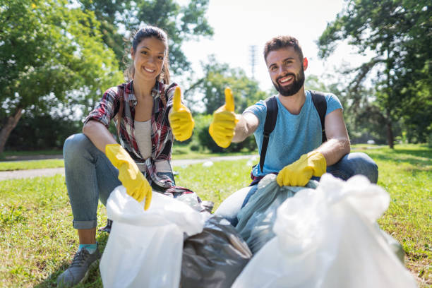
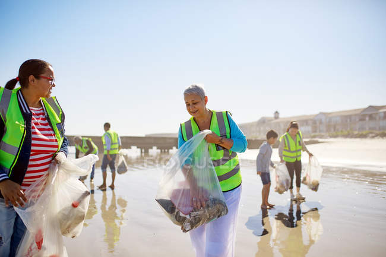
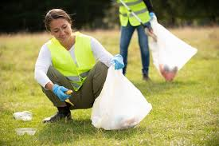
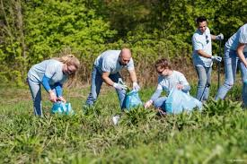
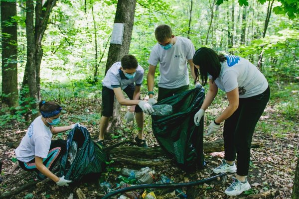
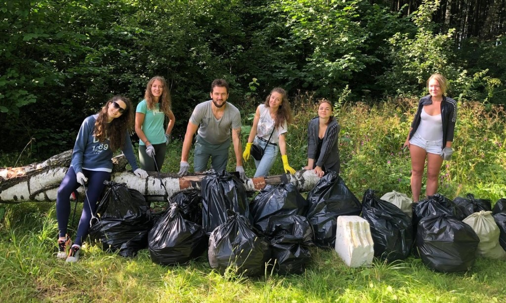
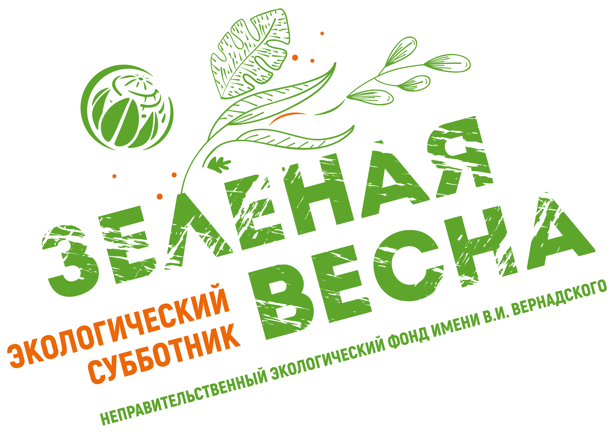
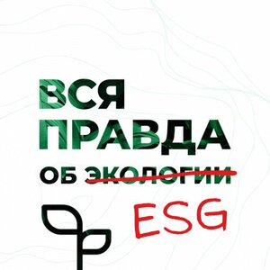